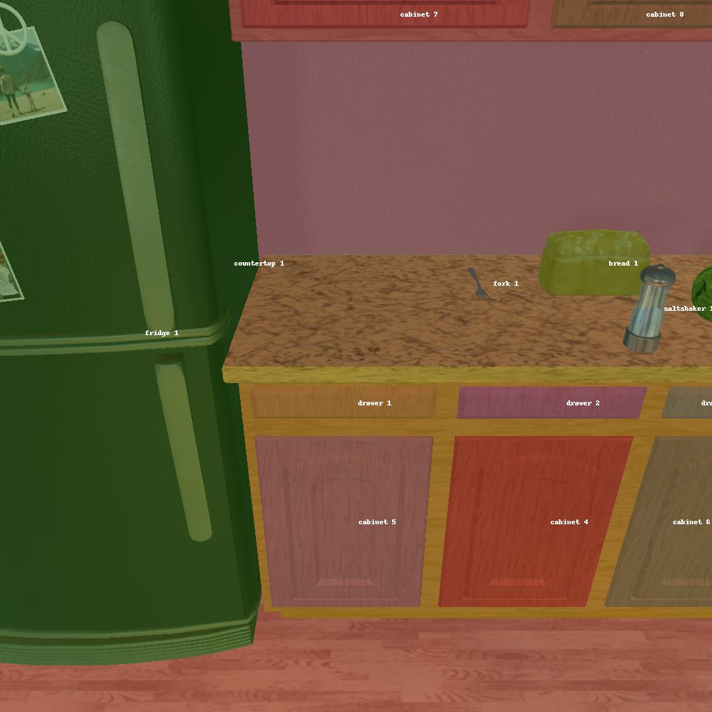

---------------------------------------------------------task: 15---------------------------------------------------------
--------------------------------------------------------------------------------------------------------------------------------------------------------------------
--------------------------------------------------------------------------------------------------------------------------------------------------------------------
Step:--------------------------------------------------------------------------6-------------------------------------------------------------------------------
----------------------------------------
VLM Prompt:
Image1:
Image2:
**Instruction**
1. Analyze the provided image to identify all visible household objects, focusing on those relevant to the task description "cool some mug and put it in coffeemachine."
2. Use the analysis of the image and the task hint "The agent must find an object of the desired type, pick it up, go to a fridge, cool the object with the fridge, then find the correct location to place it, and put it down there. The agent does not need to use the fridge button or open the fridge to cool the object, and the agent just needs to do action that is "cool the object with the fridge"." to answer the question: what is the most reasonable action in the choices for the task description "cool some mug and put it in coffeemachine"?
4. Decide and write the answer using the template: The answer is: (i): , where i is the real number. If there is no desired object in the image, search every place based on **Initial Observation** to find the object. And if no one is exactly correct, choose a similar answer.
**Initial Observation**
You are in the middle of a room. Looking quickly around you, you can see cabinet (1-15), fridge (1), countertop (1-4), drawer (1-4), microwave (1), toaster (1), coffeemachine (1), garbagecan (1), sink (1), stoveburner (1-3), sinkbasin (1)
**Answer Choices**
(1): go to cabinet 3
(2): go to fridge 1
(3): go to countertop 1
(4): go to cabinet 5
(5): go to cabinet 6
(6): go to cabinet 7
(7): go to drawer 1
(8): go to drawer 2
(9): go to cabinet 8
(10): go to drawer 3
(11): go to cabinet 9
(12): go to cabinet 10
(13): go to drawer 4
(14): go to microwave 1
(15): go to cabinet 11
(16): go to toaster 1
(17): go to cabinet 12
(18): go to cabinet 13
(19): go to cabinet 14
(20): go to cabinet 15
(21): go to countertop 2
(22): go to coffeemachine 1
(23): go to garbagecan 1
(24): go to countertop 3
(25): go to countertop 4
(26): go to sink 1
(27): go to stoveburner 1
(28): go to stoveburner 2
(29): go to stoveburner 3
(30): go to sinkbasin 1
(31): open cabinet 1
(32): close cabinet 1
(33): take kettle 1 from cabinet 1
(34): examine cabinet 1
**Answer**
Let's think step by step by following the instructions.
----------------------------------------
----------------------------------------
Original Response:
Firstly, we need to identify a mug to cool in the fridge. Since the images provided do not show any mugs, we must search every place based on Initial Observation to find one. Therefore, we can eliminate all actions that do not involve searching for a mug.
Next, based on the task description, we need to cool the mug with the fridge. Therefore, we must go to the fridge once we have the mug. However, since we do not see a mug in the images, we cannot directly choose to go to the fridge.
After cooling the mug, we need to place it in the coffeemachine. But again, since we do not have the mug yet, we cannot choose an action related to the coffeemachine.
Hence, the most reasonable first action is to search for the mug in various cabinets, as mugs are usually stored in cabinets in a household. Since we cannot determine the exact location of the mug from the images provided, we should start with the cabinet closest to the coffeemachine for efficiency.
Looking at the Initial Observation list, cabinet 6 is mentioned after cabinet 5 and before cabinet 7, which are both visible in Image 1. It is reasonable to infer that cabinet 6 is close to the countertop where the coffeemachine might be placed since it is common for coffeemachines to be placed on countertops.
The answer is: (5): go to cabinet 6.
----------------------------------------
----------------------------------------
>>> Refine Original VLM Response and Get Pure Action: go to cabinet 6
----------------------------------------
-----------------------------------------------------------------
Running time: 11.757551670074463 seconds
Total Money: 7.044249999999998
-----------------------------------------------------------------
-----------------------------------------------------------------
Text Observation:You arrive at loc 7. The cabinet 6 is closed.
-----------------------------------------------------------------
UNSUCCEED